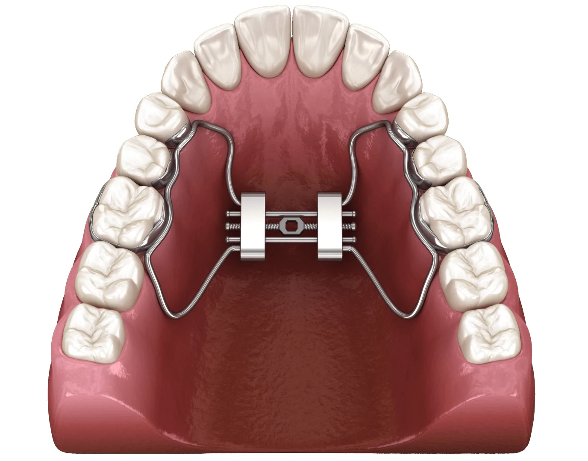
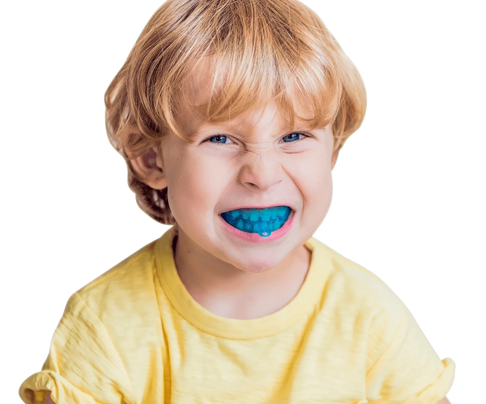
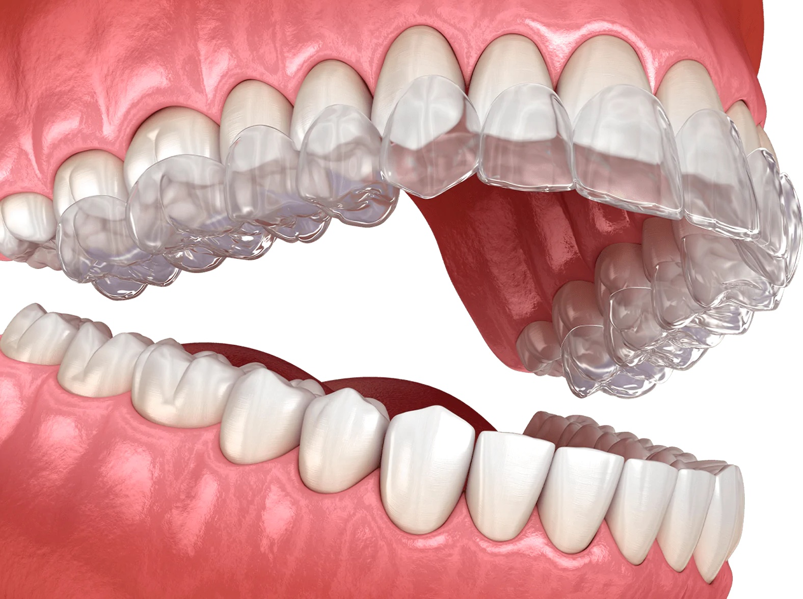
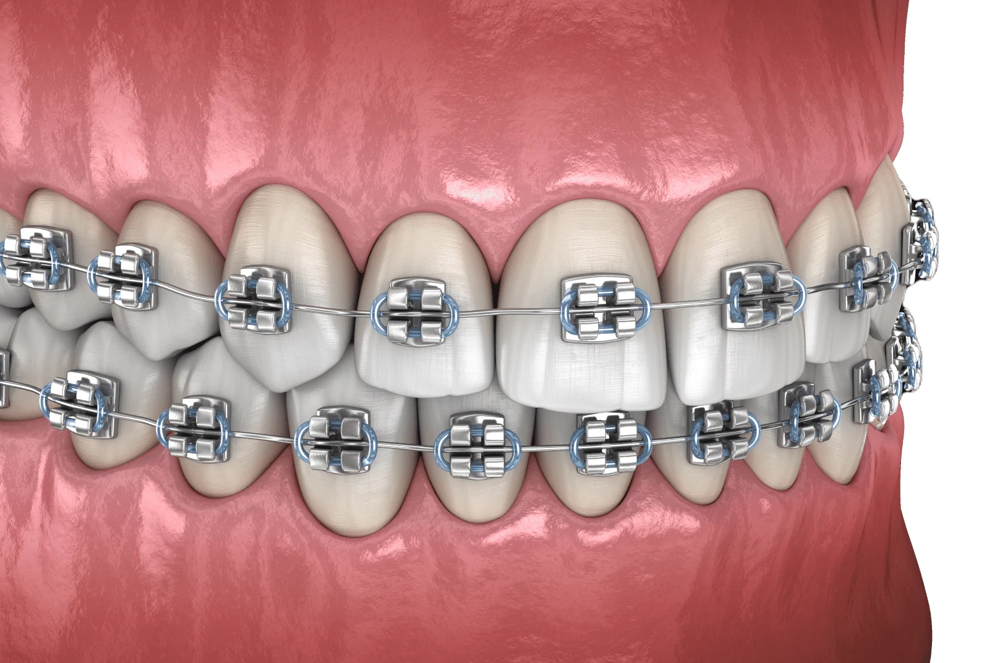
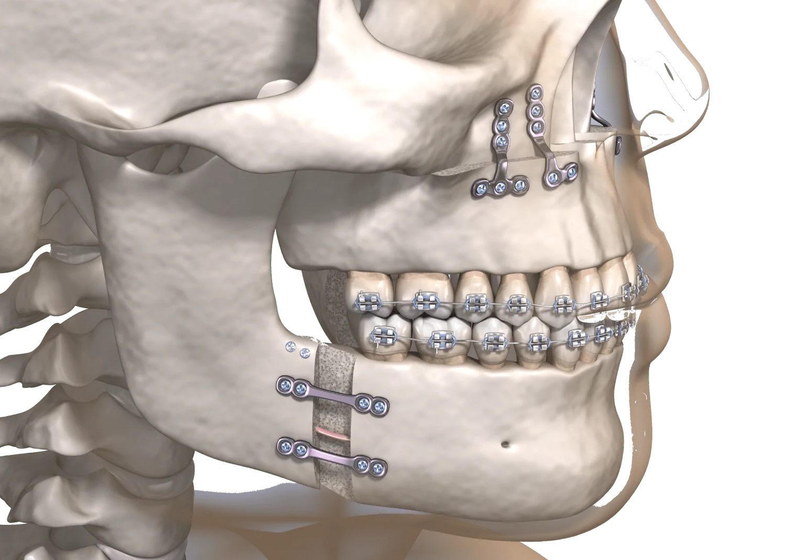

Визначення: Знімні конструкції, які допомагають утримувати зуби в правильному положенні. Використовуються переважно у дітей і сприяють формуванню правильних звичок.
Сучасні методи лікування неправильного прикусу

Ортодонтична пластинка

Трейнери

Елайнери

Брекети

Хірургічне лікування
Визначення методів
Ортодонтична пластинка
Трейнери
Визначення: Двощелепні капи із силікону або поліуретану, які вирівнюють прикус через активну роботу м’язів. Використовуються при відкритому, глибокому прикусі та для усунення шкідливих звичок.
Елайнери
Визначення: Прозорі індивідуальні капи, які поступово вирівнюють зуби. Їх змінюють кожні кілька тижнів для досягнення ідеального положення зубів.
Брекети
Визначення: Системи з металевих або керамічних замків, які закріплюються на зубах і з’єднуються дугою для поступового вирівнювання прикусу.
Хірургічне лікування
Визначення: Застосовується у складних випадках прикусу, коли ортодонтичні методи неефективні. Операція триває кілька годин, після чого пацієнт проходить реабілітацію та може носити брекети для закріплення результату.